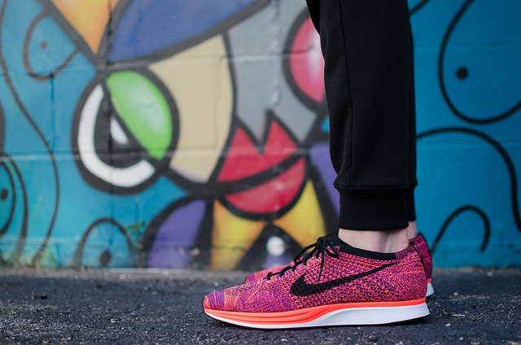
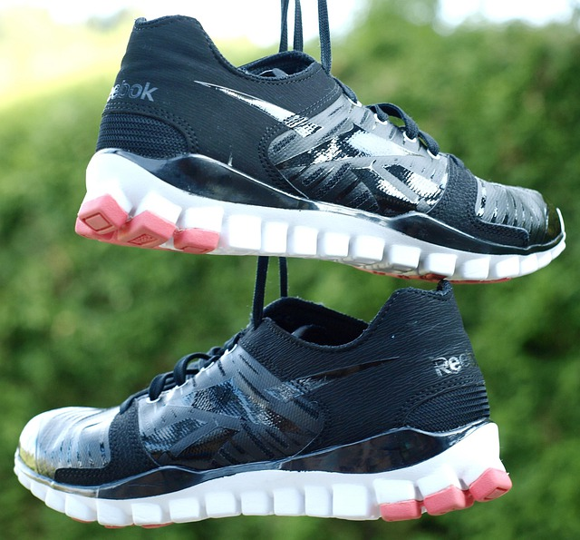
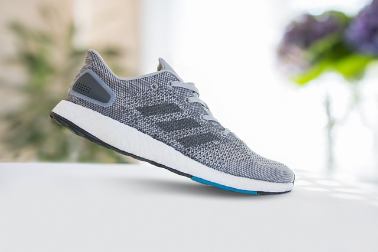
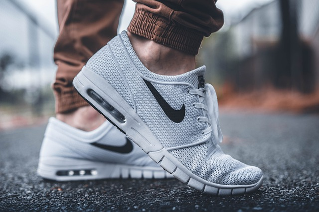

| Chaussures | Les chaussures les plus recommandées pour faire de la course à pied en ville | |||||
|  | Taille | Marque | Caractéristiques | Type de course | Couleur | |
| de 37 à 40 | Nike | douces et légères | Recommandées pour de la course sur route. | noir, rouge, rose. | ||
| Si vouz êtes fans, vous passerez votre temps à vous amuser et à vous entraîner. | ||||||
| Chaussures | Les chaussures les plus recommandées pour faire de la course à pied dans la nature | |||||
|  | Taille | Marque | Caractéristiques | Type de course | Couleur | |
| de 41 à 46 | Reebok | légères, confortables et durables | Recommandées en forêt. | bleu, gris, vert, noir. | ||
| Si vous êtes fans, vous passerez votre temps à vous amuser et à vous entraîner dans la nature. | ||||||
| Chaussures | Les chaussures les plus recommandées pour faire de la course à pied partout | |||||
|  | Taille | Marque | Caractéristiques | Type de course | Couleur | |
| de 35 à 43 | Adidas | Réduit la fatigue, maintientles pieds aérés | Recommandées pour tout environnement | rouge, gris, vert, bleu, noir | ||
| Si vouz êtes fans, vous passerez votre temps à vous amuser et à vous entraîner où vous en avez envie. | ||||||
| Chaussures | Les chaussures les plus recommandées pour faire de la course à pied pour les longues distances | |||||
|  | Taille | Marque | Caractéristiques | Type de course | Couleur | |
| de 40 à 45 | Nike | Confortables, légères, aérées | Recommandée pour de longs trajets sur un surface moderée | bleu ciel, noir, blanc | ||
| Si vouz êtes fans, vous passerez votre temps à vous amuser et à vous entraîner en vous maintenant les pieds au frais | ||||||
© CAP - Mentions légales
Faire de sport est bon et recommandé pour la santé, pensez à vous entraîner.